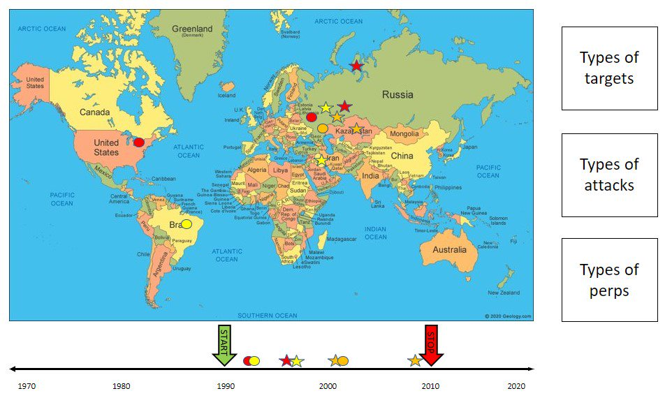
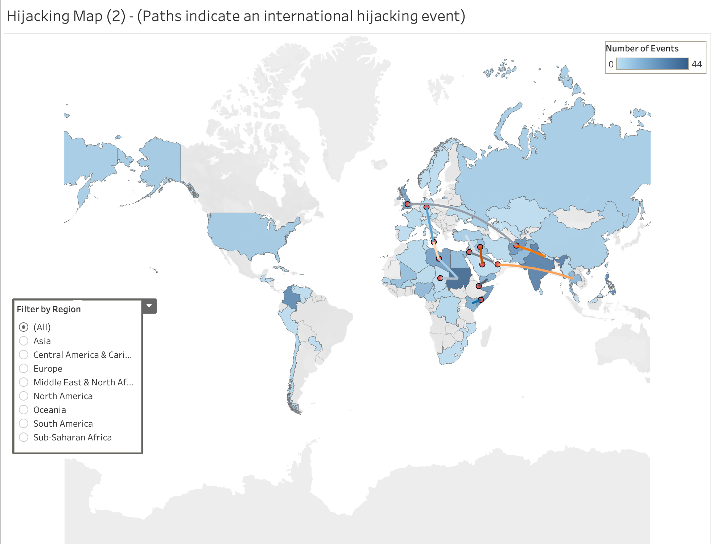
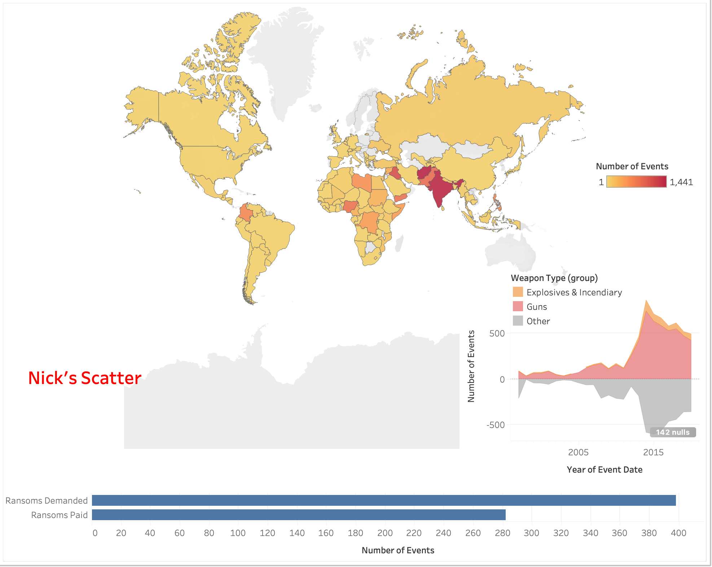
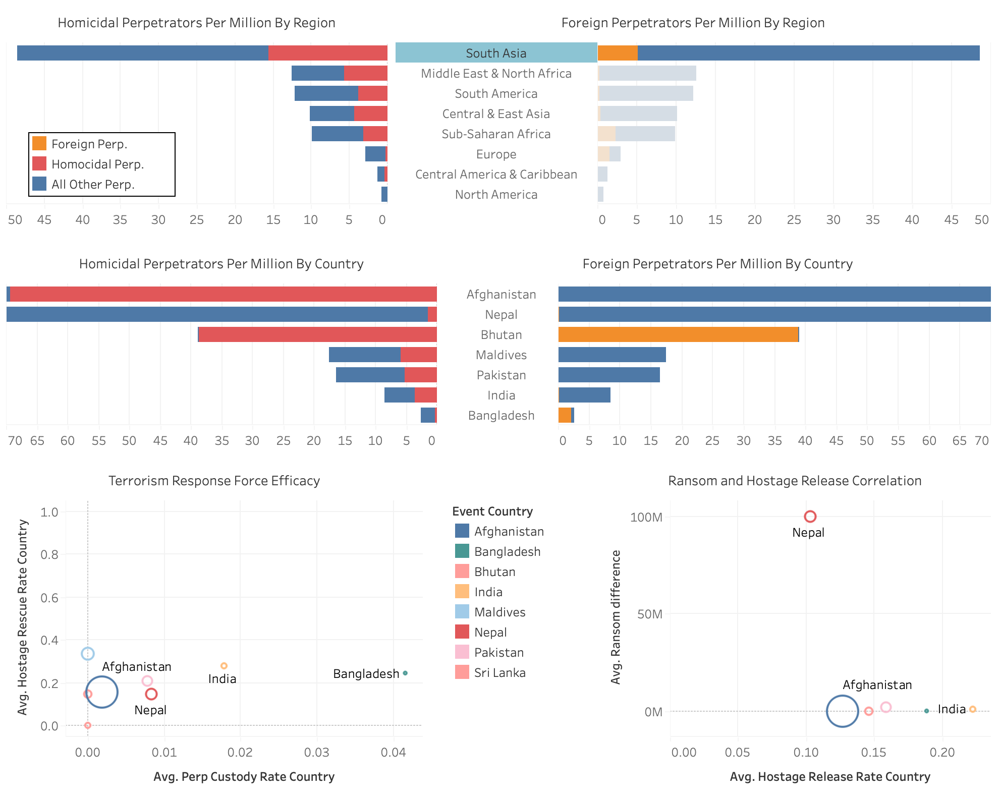
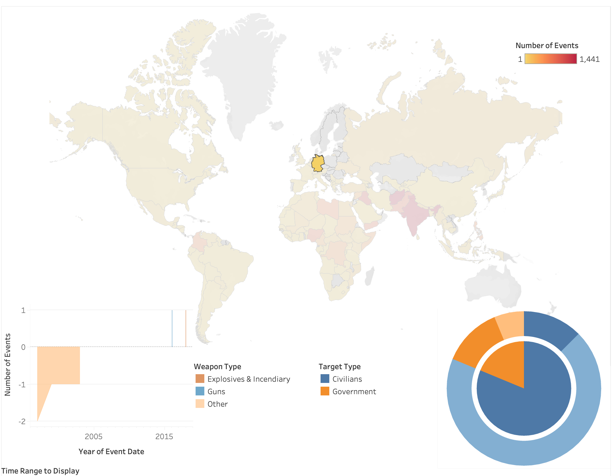
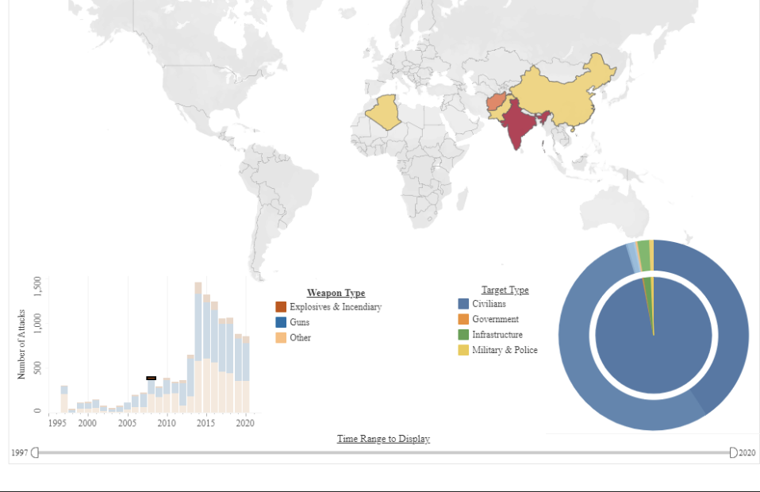

The Global Terrorism Database™ (GTD) is an open-source database includes information on terrorist events around the world from the year 1970 to 2020. The data is vast in terms of length and breadth, for this analysis a subset of data focuses on hostage situations, outcomes and success is sliced to answer questions of
interest to this group. Most of the data was a capture of many sources and methodology, we ran through multiple iterations of the data transformation to fit requirements for the visualization. The current dashboard is built to answer the initial questions and may be updated to fit future scope (e.g.: Ransome, Hijacking ).
The consumer of this report can be a head of state or strategist planning to avoid unpleasant circumstances and successful outcomes for operation of such kinds.
When we first started the project, we planned on using the whole range of terrorism attacks. Therefore, we planned on showing the world map and have a heat map representing the number of countries in each country. We wanted to add filters for three different categories: Types of Targets, type of attacks, and type of perps. Additionally, we wanted to add a time line chart where each attack was documented on the time line. An outline of that can be observed in the image below.
Additionally, we wanted the three main categories as well as the time line to act as a filter.

First Implementation of Idea:

The first implementation was a simple world map where each country was color coded according to the number of events. We then added international hijackings as lines connected to point those events out. However, after further testing and talking to others, we decided that this implementation is not easily readable or interpretable and therefore
decided to take a different route. We filtered all the events for only hostage event as described in the Section ‘Data and Data Preprocessing’ and thought about new ways to visualize the data. We wanted to keep the world map as the main graph and thought about different plots that would add value to the visualization. After further deliberation, we decided
that we wanted to have a timeline plot for the weapon use over time and a scatter plot for the Target types.We decided to use a stream chart for the weapon types over time plot, but we had issues to make the scatterplot meaningful. We decided to add a simple bar chart for ransom demanded versus ransom paid to add more information. At this point we started to
link the different graphs together such that we could analyze different regions and countries better and also be able to compare them.A first implementation of that idea can be seen in the picture below.

Since we struggled to come up with a scatter plot fir the target types, we decided to use a sunburst instead to show the distribution and proportion among the target types and their subcategories. At the same time, we wanted to focus on more than just the number of events, target types, and weapons used. Another interesting aspect that we wanted to focus on were
the people involved in the hostage situation: the hostages and the perpetuators. We decided to use two kind of visualizations for this purpose: butterfly graphs and scatterplots. The butterfly graphs were chosen because it shows data symmetric and is an ideal choice to compare two similar distributions. We started with trying to compare perps to hostages but the
counts were drastically different for each so we went with two aspects of the same quantity (perps). Doctrinally, foreign fighters play by a very different set of rules than domestic fighters. So we looked at the number of foreign fighters per million people. Next, we tried to think of the next most interesting aspect of the nature of the perps. We decided to look
at how many perps were involved in murdering their hostages. The variance from country was very interesting. These perp trends made me want to add GDP or some other economic measures to the analysis.We implemented the same idea twice with the difference that one butterfly graph shows the distribution per region and the second shows the top 5 country for a selected region.
Because the butterfly charts on the top of the dashboard offer analysis of the nature of the perps, we decided to do a similar but different deep dive on the nature of the terrorism response forces by region and country. That is why we used one scatterplot to consider at a two axis measure of the quality of the response forces. Given the data available, the best measure of
response force success is how often they capture perps and rescue hostages. The countries in the upper right corner of the scatterplot are successful along both designated dimensions. The countries in the lower left are unsuccessful along both dimensions. All measures are normalized by dividing the counts per capita, then multiplying the resultant by 1,000,000. We chose
this number to scale the resultant because we wanted the actual value to be relevant to the user. Without multiplying by 1,000,000, the vast majority of the values are small fractions. Users have a hard time imagining a fraction of a person. The other scatterplot looks at the efficacy of ransoms. The y axis is the average difference between ransom demanded and ransom paid.
The x axis is the average number of hostages released by the perpetrators. What we find is that, in general, the more the perps were paid, i.e. the lower the difference between ransom demanded and paid, the more hostages were released. That is why we see patterns of clusters of markers along the x axis. The implementation can be shown below

Once we had both dashboards completed, we started testing and came across an issue. When selecting certain countries with little or no data for the weapon types, the stream chart was hard to read which might lead to more confusion rather than giving insights. The image below shows an example of such issue when selecting the country Germany. To erase this issue,
we switched plans and went with a plot that shows data in a similar way stacked way as the stream chart does and went with a simpler version of that: a stacked bar plot.

At this point, we were satisfied with the visualization at hand. We went with two slides for the visualization, the first page being the world map with the stacked bar plot and the sunburst, and the butterfly and scatterplots on the second slide. After this, we focussed on optimizing the visualizations. We implemented a refresh button on the top center and used
optimizers to check for accessibility for people with any kind of vision disability. We also implemented more information in the tool tips such as a zoom of the country browsed over on the world map, the numerical percentages in the sunburst tooltip, and also added a tooltip for the bar chart.
To support visualization and latency, we decided to enhance the length and breadth of the data. The process includes uploading a flat file to Microsoft SQL server and working the data from that point. Logically columns were reduced to fit our scope of study and important field that will help answer the initial questions.
Data processing includes converting date field and number field to significant digits.
Country names were standardized to fit the current nomenclature and international boundaries. Flags (-99) available within the data set were converted to Null. Multiple flags to support visualization and capture purpose or outcome of the event.
Total hostage and total perp had to be adjusted in some cases where the total was less than the sum of parts, in which case the total was re-assigned the sum of its parts. For example, if there were 24 hostages but 25 hostages were killed, the total hostage count would be changed to 25. Regions are assumed to be culturally
and politically more similar to each other than to countries outside their region. Some regions were aggregated (East Asia and South Asia were combined into Asia) due to low variance demonstrating they were essentially from the same group.
Some countries and regions were excluded entirely due to these events being so rare
that it did not warrant consideration within the limited space of a dashboard. For example, we dropped Oceania, a region including Australia, New Zealand, and a few other island nations. The entire region only had a couple hostage events, so it was excluded. Similarly, Qatar had a single incident where the one hostage was rescued, and one terrorist was captured. This single event causes a visually significant change in hostage rescue to perpetrator capture scatterplot. Tableau did not validate a few country names and the latitude and longitude provided in the data set were exact location. For this study we did not choose to keep that granularity of the event to infer any internal geographic tensions. Country names were corrected or replaced with current day names for Tableau to recognize current boundaries. Country population data additionally was inserted as a denominator to the calculated fields in tableau.
Weapons Type:
- Explosive & Incendiary (includes Explosive, incendiary)
- Guns (Fake Weapons, Firearms)
- Other (Chemical, Melee, Sabotage Equipment, Vehicle, Unknown and other)
Target Type:
- Civilians (Abortion related, Business, Educational Institution, Journalists & Media, Private Citizen & Property, Religious Figures/ Institutions, Tourists
- Infrastructure (Airports & Aircrafts, Food or Water Supply, Telecommunication, Transportation, Utilities)
- Military/ Police/ Government (Diplomatic, General, Military, Police)
- Others (Maritime, NGO, Other, Unknown)
- Terrorists (Terrorists/ Non-state Militia, Violent Political Party)
Limitation:
- Population used is not normalized while using in calculated field for the year 1997- 2020
- Current data may not be the true representation of the original dataset. Subset data is used to create preliminary inference.
- Legacy issues: Since the data set was updated incrementally, new columns were added through the year causing the data fields to be redundant
The following section lists the questions and our observations from the visualizations-
Weapons were summarized to logical bucketing for the simplicity of the visualization (refer data grouping) Spike in events seen post 2014. There is delta increase in use of weaponry type which explains the events following the major events during the period.
1a. Which countries seem to contribute to the spike?
The Iraqi Civil war (beginning 2013), War in Northwest Pakistan (Operation Ghazi), Second Libyan Civil War, Boko Haram insurgency contributes to the spike to this weapon type.
1.b. How many of the event in Iraq affect Civilians versus in 2014?
Majority of the events in Iraq affected the Civilian (>50%)
O1c. How did the 2008 attack on Mumbai impact the Target type?
~98% of the Civilian were affected by the 2008 attack in Mumbai

To be answered
To be answered
To be answered
To be answered
To be answered